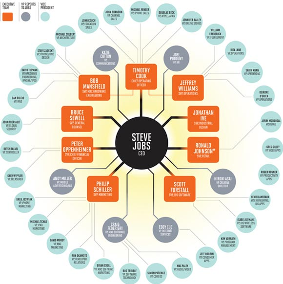

I was conducting
a research for companies with awesome organizations
So I wanted to share
some of the wisdom acquired
with 1 week of research
Because with Camplight
i`m searching more ways
for it to become awesome!
Being part of something
cool is outdated
Try to be part of something
awesome!
Let`s start with
GitHub
social coding ... awesomeness
ASYNCHRONOUS
work on what they want
work where they want
work when they want
Optimize for happiness
flexibility
no managers - no deadlines
no meetings - no workhours
Work like open source

use github to build github
Distributed
tools are office
Biggest challenges
Overcommitment
Signal vs. Noise
Opinion overload
Same story
flat, distributed, tools
Exessive focus on hiring
on T-shaped individuals
* this organizational model is not for everyone
with selective hiring you get multidisciplinary teams
flat structure gives you freedom
with freedom you get different roles
So they have to measure value
Not good at
another awesomely organized company

they consider meetings as toxic waste
flatland can scale
distribution is the king
proactive culture
Didn't find any weaknesses
it seems they're good at everything :D
There're a lot more
Gore
A team-based, flat lattice organization
8000+ strong, you may know them because of Gore-Tex
Supercell
Transparent game dev company
ngenworks
Transparent, distributed, decentralized, collaborative, egoless jellyfish :D
Wiredcraft
French, American, Korean, Chinese and Finnish team forming a transparant organization
Threehouse
Becoming an awesome organization. With no managers!
Enspiral
network of companies and professionals working together to create a thriving society
Hackerspaces!
like initlab, varnalab, hackafe, burgaslab :)
being awesome is based on values, not policies
Camplight
an awesome lifestyle organization focused on developing and design
So what do all of them have in common?
Introducing the "awesome business organization" framework
Transparant
don't hide anything
Distributed
use internet and other apps as tools
Decentralized
don't have an office space
Flat
don't have managers
Open
not just open source. Embrace the mindset
Freedom
collaborate, don't delegate
Value trust, collaboration, egoless individuals and leadership
forget corporate thinking